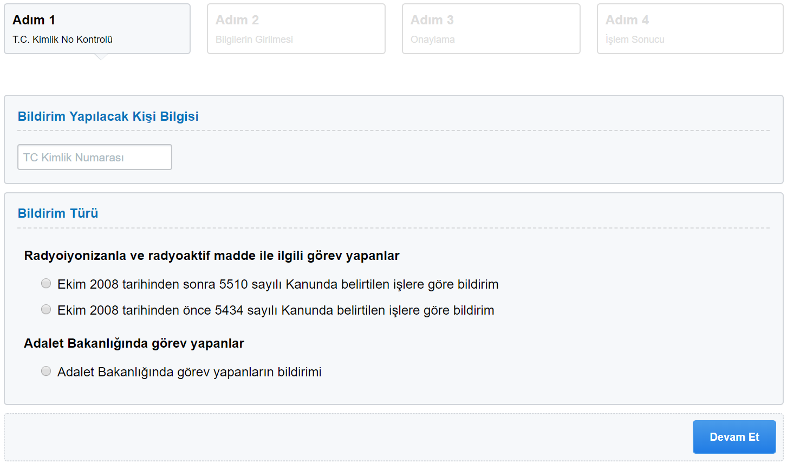

Adalet Bakanlığında görev yapanların bildirimi
Bilindiği üzere; 25/8/2017 tarihli ve 30136 sayılı Resmi Gazete’de yayımlanarak aynı tarihte
yürürlüğe giren 694 sayılı Kanun Hükmünde Kararnamenin 153 üncü maddesi ile, 5510 sayılı
Kanunun 40 ıncı maddesinde yer alan tabloya 19 sıra numarası eklenerek Ceza İnfaz
Kurumlarında İnfaz Kurumu Müdürü, İdare Memuru,
İnfaz ve Koruma Başmemuru, İnfaz ve Koruma Memuru unvanlı kadrolarda bulunanlar ile
Adalet Bakanlığı taşra teşkilatına tahsisli kadro veya pozisyonlarda bulunup ceza infaz
kurumlarında görev yapan ve ceza infaz kurumlarında hükümlü ve tutuklularla bilfiil irtibat
içinde olan diğer görevlilerin fiili hizmet süresi zammından yararlandırılmalarına imkan
sağlanmıştır.
Bildirimin Gönderilmesi
HİTAP ekranında sol menüde Başvurular menüsü altında Yeni FHZ Bildirim linki tıklanır. Açılan ekranda bildirim yapılacak kişinin TC Kimlik Numarası, ve bildirim türü seçilir.
